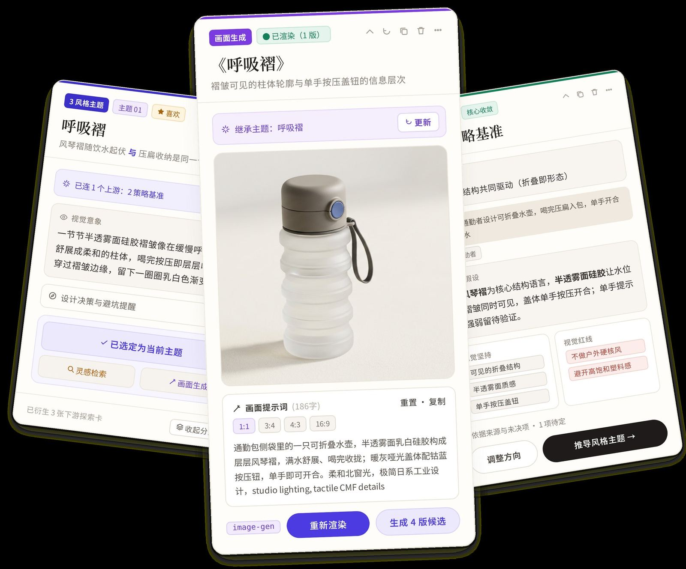
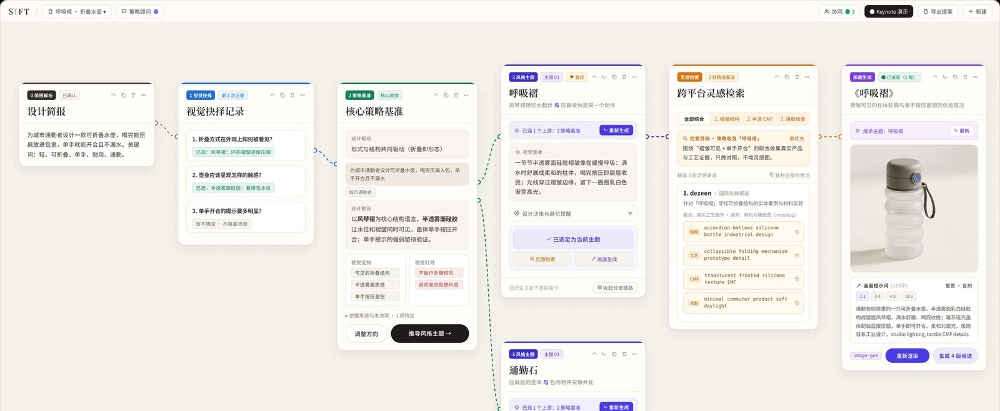
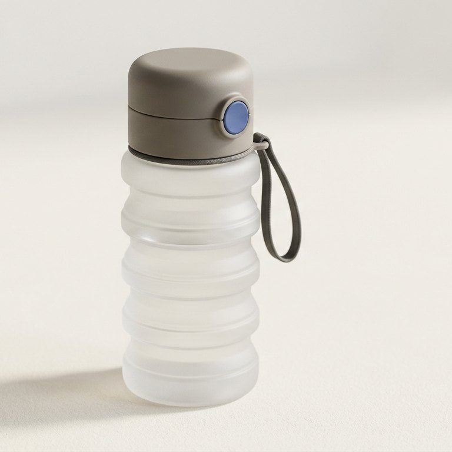
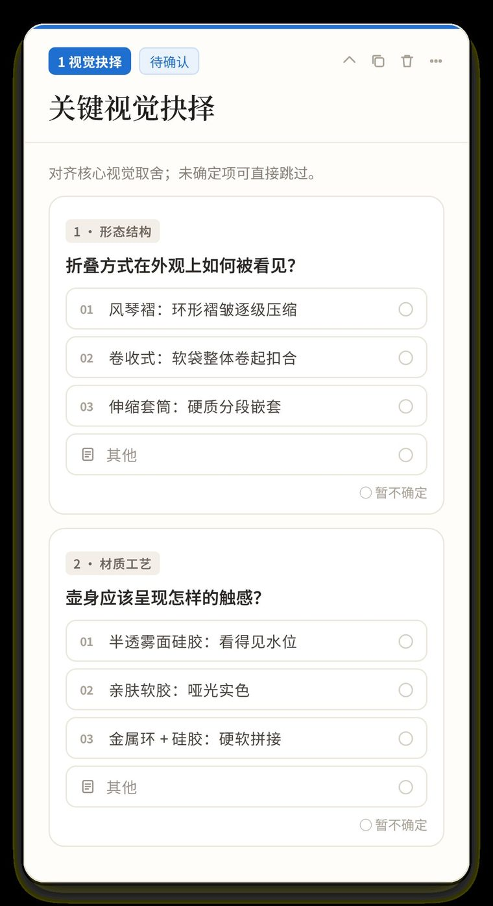
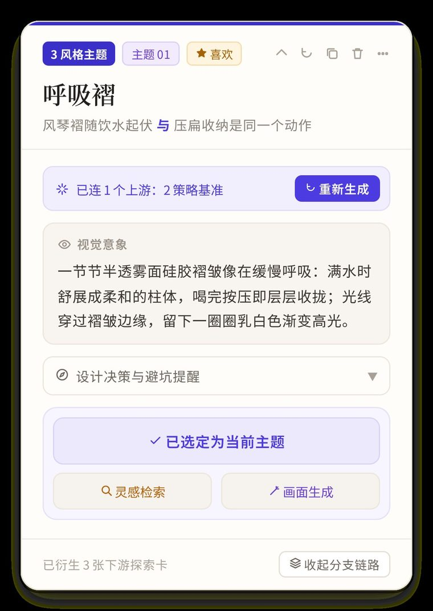
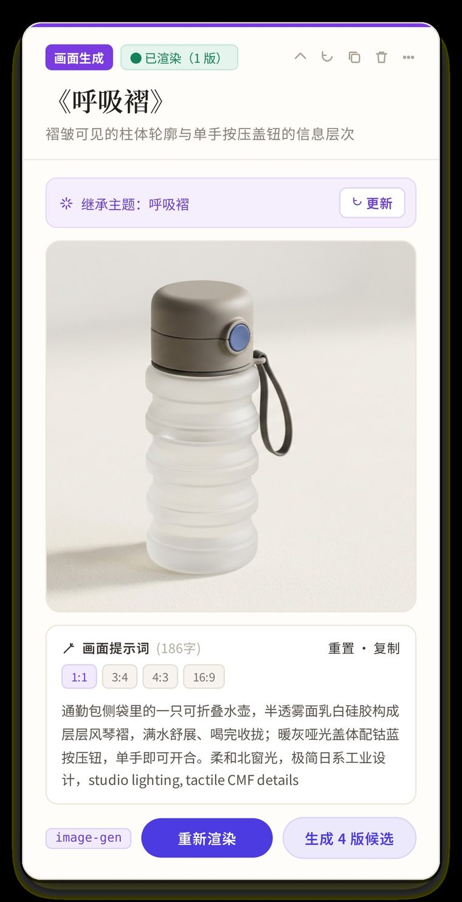
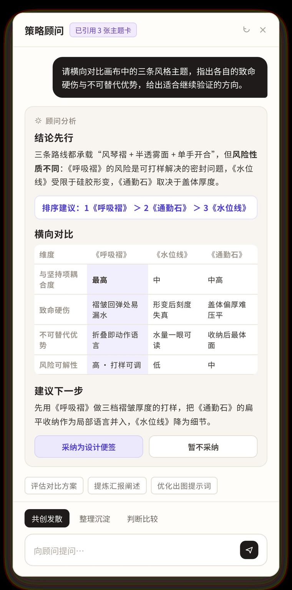
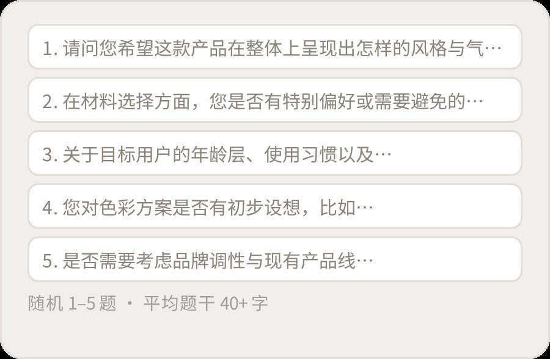
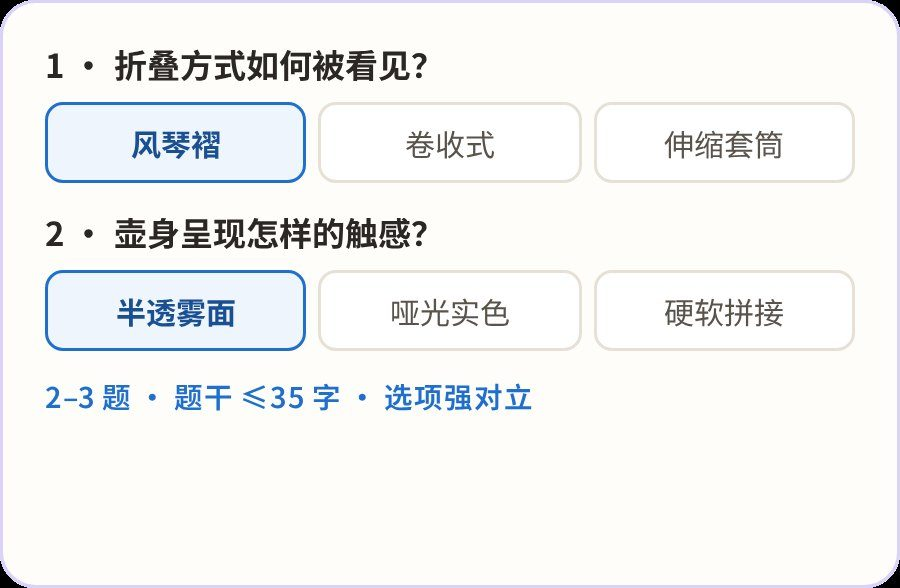

SIFT · 01 / 03
SIFT · 01 / 03
Sift the noise.
Find the direction.
SIFT 是一个服务设计前期的 AI 智能体：把一句模糊 Brief，收敛成说得清来由的视觉方向。

Problem · 问题
拿到模糊 Brief，设计师不缺图，缺的是“先判断什么、再搜什么”的次序。
Approach · 判断
只问分水岭问题的 Agent，加一张能追溯每一步来源的画布。
Outcome · 结果
4 周把定位越改越窄：从“能出图的 AI”收敛成“陪你做判断的搭档”。
01 · Problem
问题
设计前期缺的不是图，
而是判断的次序。
工业、CMF、包装和 UI 设计师拿到模糊 Brief 后，常卡在四个断层。
01
意图与边界模糊
有初步感受，却说不清最大的不确定性在哪，常把视觉诉求和技术约束混在一起。
02
AI 工具的“生图幻觉”
一键出效果图很热闹，但前期需要的是视觉策略与检索方向。
03
搜图没有次序
先搜材质还是先搜结构？大量模板样机掩盖了真实工艺。
04
决策不收敛
收藏夹堆满碎片图，却很难向团队讲清方向是怎么推出来的。
机会点：不再帮设计师“找更多图”，而是帮他们理清先判断什么、再去搜什么。
02 · Decision
关键判断
每次只问一个
会改变设计判断的问题。
- Brief
- 找不确定性
- 关键提问 · 2–3 个对立选项
- 设计师回答
- 更新 State
- 人工确认点
AI 的推论标为“待确认”，设计师确认的才算事实；方向收敛或连续不确定时，平滑停到人工确认点。
我主导的三次减法
09.18一次性输出长篇方案几千字的策略方案，测试中几乎没人读完每轮只问 2–3 个关键问题
09.21生图、打样与公差字段让产品被当成出图工具，偏离前期判断删掉伪工程字段，画面只辅助判断
09.22多个 AI 对话框来回切确认过的判断很难被找回和追溯所有 AI 交互放进画布卡片，每步有来源
03 · Design
设计
一张画布，串起从 Brief
到提案的整条推演链。
简报 → 视觉抉择 → 策略基准 → 风格主题 → 灵感检索 → 画面生成。卡片可以自由组合，每张都标明自己的状态。

Demo walkthrough · 示例 Brief
一句模糊 Brief，三个问题后收敛成一张概念图。
- 输入 Brief为城市通勤者设计一款可折叠水壶，喝完能压扁放进包里，单手开合且不漏水。
- 三个分水岭问题形态：风琴褶 · 材质：半透雾面硅胶 · 开合提示：暂不确定，待验证。
- 沉淀策略基准以风琴褶为结构语言，让水位和褶皱同时可见；不确定项单独留档。
- 推演主题并检索推出「呼吸褶」「水位线」「通勤石」，选定后生成去噪检索词与概念画面。





改动前后：提问从“问卷”变成“抉择”。


04 · Outcome
发布短片
65 秒看完 SIFT。
约 19 MB · 点击播放后才开始加载。
05 · Reflection
反思
最难的不是让 AI 多做，而是让它少做。
克制比功能更难
删掉打样、渲染这些“看起来很强”的功能，产品反而更像设计师的搭档。
假设和事实要分开
AI 的推论标为待确认，设计师确认的才算事实，信任感来自透明。
做组长也要做取舍
在调研、设计和开发之间排优先级，每次转向都写进决策日志。